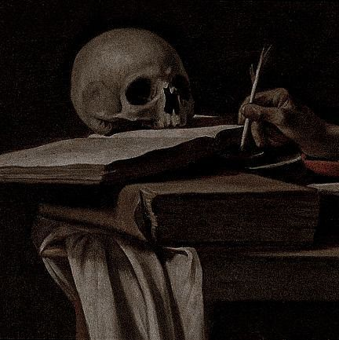
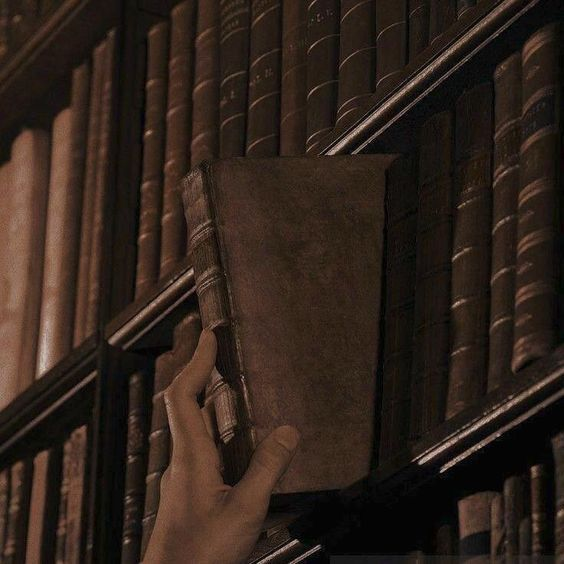
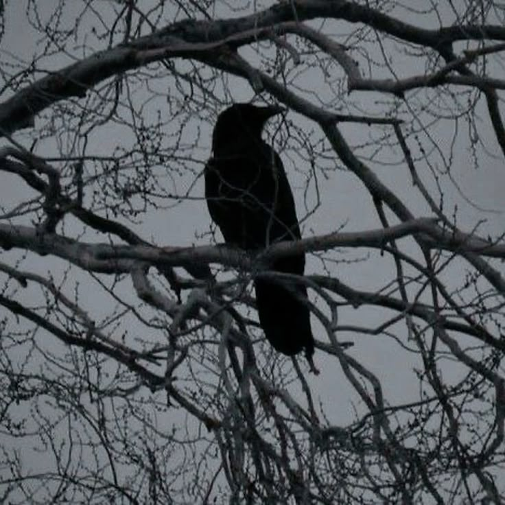
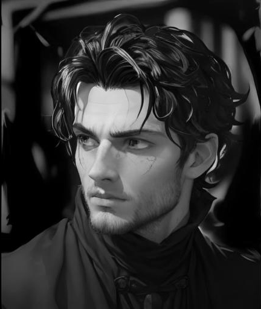

Over Elias Nocturne
Elias Nocturne is een 17-jarige student aan een mysterieuze universiteit, met een diepe passie voor oude boeken, magische teksten en geschiedenis. Zijn stille en observante aard brengt hem vaak naar de bibliotheek, waar hij verborgen kennis ontdekt en een geheimzinnig alter ego ontdekt: Tenebris.


Tenebris: Het Alter Ego
Tenebris, Elias' alter ego, is een schaduwachtige kracht die de duisternis beheerst. Met felrode ogen en een ongrijpbare mantel beweegt hij door het onbekende, terwijl hij de mysterieuze macht van schaduwen gebruikt om zijn doelen te bereiken.